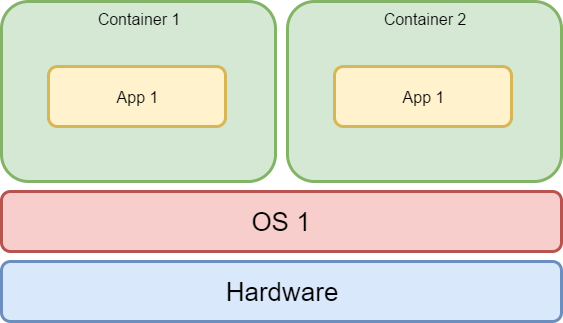

Your browser doesn't support the features required by impress.js,
so you are presented with a simplified version of this presentation.
For the best experience please use the latest Chrome,
Safari or Firefox browser.
The plan
- Motivation and concepts
- Docker basics
- Docker file
- Life without Dockerfile
- Life with Dockerfile
A short story
Back in time, we used to have 1:1 relation between a server and an application.
If we have 2 applications, we needed 2 servers.
You know where I'm going with this. More applications means more servers.
And with it, networking, backup, operating system installation and configuration.
Virtualization:
A method of divide the system resources between different applications. To use it, we need a virtual machine.
Virtual machine:
Is an emulation of a physical computing environment.
Problem solved! \o/
Right?
Wait! What is the price of running a VM?
Virtual Machines waste a lot of resources. A VM requests for CPU, memory, hard disk, network and other hardware resources, which are managed by a virtualization layer (hypervisor) responsible for translating these requests to the underlying physical hardware.
Vagrant
Vagrant is a virtual machine manager, with it you can easily create, modify and delete virtual machines using the command line rather than a user interface with icons.
The creation of the virtual machines became faster with Vagrant. It offers a repository with virtual machines pre-installed to be downloaded and used as faster as your internet connection can download it.
Vagrant
But, under the hood, it's still running a virtual machine.
What is docker?
Docker is a piece of software which aims to simplify the process of building, deploying and shipping applications and then running them in a controllable environment (sandbox).
The sandbox environment is called container and this is really important to know.
The container revolution started when the maintaners of the Linux Kernel added a feature called namespaces.
Namespaces can be used to create an isolated container that has no access to objects outside it. This enables multiple isolated executions within a single operating system kernel.
What is docker?
Advantages:
- A container doesn't need to boot the operating system kernel like VM's because it's running on the atual operating system kernel.
- The creation of a container is so fast as the instantiation of a class.
- Containers states (or images) are very small compared to VM's, so they are easy to distribute.
What is docker?

Where is the hypervisor?
What is docker?
Docker is technology agnostic, you can use docker with almost any language or framework.
Here, on this presentation I'm going to use for example Java and Python, but I can easily run Ruby, Go, Scala, Smalltalk, Groovy.
Docker containers
A container is a stardard way to ship your code to different environments.
A running instance of an image is also know as a container.
Docker images
An image is the basis of a container, a blueprint to get a container running, it's built to be used in a container.
Also, an image doesn't have a state and it never changes.
Enough of theory.
Let's start the hands-on!
Hands-on
Docker client
Docker ships with a client which is used to put stuff in a container, load containers in ships, remove containers from ships and so on.
It's how we interact with images and containers, actually a little more than that.
docker
docker -h